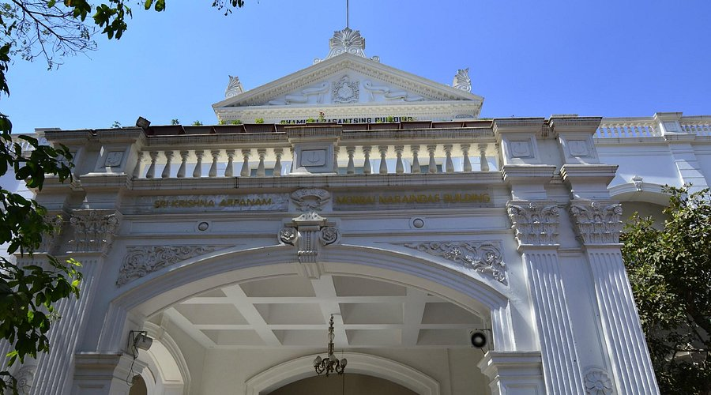

The Darshan Museum, located in Pune, Maharashtra, is a unique interactive museum dedicated to the life and teachings of Sadhu Vaswani, a spiritual leader and social reformer. Opened in 2011, the museum blends traditional storytelling with modern technology, including holographic displays, 3D imagery, and audio-visual effects, to narrate the inspiring journey of Sadhu Vaswani and his messages of love, service, and compassion.
Museum HighLights
Interactive Storytelling: The life and teachings of Sadhu Vaswani are depicted through holograms, 3D projection, and light-and-sound shows
Technological Excellence: Advanced technology like motion graphics, audio-visual effects, and laser displays create an immersive experience.
Key Moments Depicted: The museum showcases pivotal events from Sadhu Vaswani's life, such as his contributions to education, spirituality, and social reform.
Meditative Ambiance: The serene environment encourages visitors to reflect on themes of love, service, and compassion.
Visitor-Friendly Features: Guides, multilingual support, and accessibility options make it suitable for diverse audiences.
visiting information
Location: Sadhu Vaswani Mission, Pune, Maharashtra, India. Timings: Open daily from 11:00 AM to 7:00 PM. The last show begins at 6:00 PM. Entry Fee: Free for all visitors. Duration: The visit typically takes around 1.5 to 2 hours. Best Time to Visit: Weekdays are ideal to avoid crowds. Facilities: Guided tours, multilingual support, and wheelchair accessibility are available.
Best Time to Visit
The best time to visit the Darshan Museum is during the winter months, from November to February, when the weather in Pune is cool and pleasant. Visiting on weekdays is recommended to avoid weekend crowds and enjoy a more peaceful experience. The museum is open throughout the year, so visitors can plan their trip at any time.